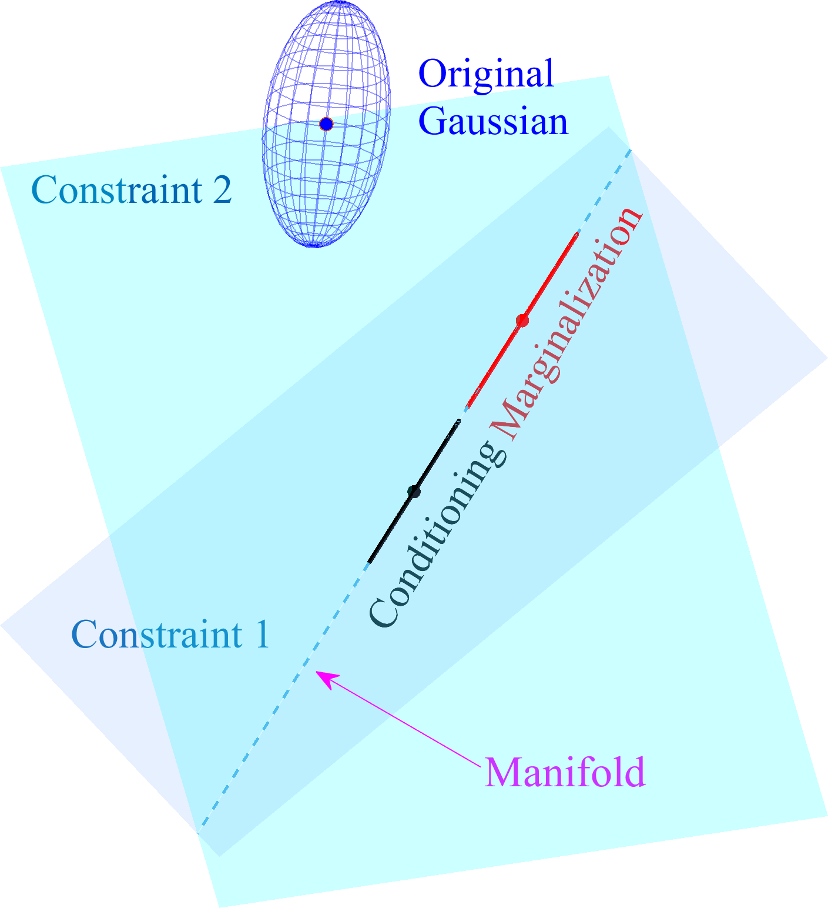

International Conference on Robotics and Automation (ICRA), 2025
★ ICRA Best Conference Paper Award
We extend Gaussian marginalization and conditioning from axis-aligned linear manifolds to general linear manifolds, and use this result to derive a principled local approximation for smooth nonlinear manifolds. This provides theoretically justified inference operations for Gaussian distributions constrained to manifold structure. In robotics, the framework applies naturally to constrained estimation problems, enabling covariance extraction by conditioning an unconstrained Gaussian approximation onto linearized constraints.
Many robotics estimation problems involve states that must satisfy geometric or physical constraints. These constraints may come from the state representation, such as rotations and poses, or from the estimation problem itself. After estimating the optimal states, practitioners often need covariance estimates that remain meaningful on the underlying feasible space. This paper provides principled marginalization and conditioning tools for Gaussian approximations on such spaces, enabling uncertainty analysis in constrained optimization problems. We demonstrate the approach on a few applications, including constrained localization implemented in GTSAM.
Robots need to estimate many things about themselves and the world around them, including their position, orientation, motion, and the surrounding map. For planning and safety purposes, they also need to understand how uncertain these estimates are. Standard mathematical tools can represent this uncertainty, but the problem becomes harder when the estimates must obey constraints, such as keeping rotations valid or enforcing contact between a robot arm and a box. This work extends those tools to constrained settings, so the resulting uncertainty estimates remain meaningful for many robotics applications where such constraints naturally arise.
@article{guo2025manifoldgaussian,
title = {Marginalizing and conditioning Gaussians onto linear approximations of smooth manifolds with applications in robotics},
author = {Guo, Zi Cong and Forbes, James R. and Barfoot, Timothy D.},
journal = {IEEE International Conference on Robotics and Automation (ICRA)},
year = {2025},
month = {05},
pages = {2606-2612},
doi = {10.1109/ICRA55743.2025.11128000}
}